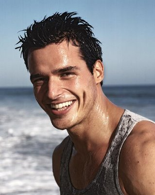

5 sites were chosen and analyzed: Yale, Boston University (BU), Rutgers University (RU), Massachusetts Institute of Technology (MIT), and University of Notre Dame (ND). Sites were chosen by viewing several lists of "Best University Web Pages" and selectively choosing a few. Click through each link for the raw data breakdown of the organization of the sites primary navigation.
All five sites organized their primary navigation by task, not by user type, though BU had an additional navigational element for user type. Every site also had a dedicated news and/or events section on the homepage to spotlight goings on at the university, rather than necessitating a "News" tab on primary navigation (though RU did both). Four of them had an embedded search form on the home page, and two had a site map in the footer

Notre Dame's footer included a sitemap, which helped the navigability of the site.
These were the most common topics of primary navigation on each site, with the most common secondary elements listed as well:
Every page had an Admissions and About tab, so these were obvious inclusions. Most had an Academics/Education tab, a Research tab, a Global tab, and a Donations tab. Other elements on more than one site were Campus Life, Athletics, some sort of "Faculty" portal, and a tab for the local community.
The second level navigational terms were rather straightforward: for the most part, including the most common terms from the analyzed sites, as well as a few of the terms that had been included in primary navigation but we decided to move, got the job done. Some elements that were used sparingly as second level navigation were on the third level on other sites, and many of these were relegated to the third level on our site as well.
This is what we decided on for our primary navigation:
| Academics | Admissions | Campus Life | About UL | Research |
| Academic Calendar | Undergrad Admissions | Campus Events | Maps / Directions | Programs |
| Undergraduates | Graduate Admissions | Athletics | Offices & Services | Facilities |
| Graduate Students | Transfer Admissions | Dining & Shopping | Visiting UL | For Undergrads |
| Schools/Colleges | Returning Students | Recreational Services | Fast Facts | Recognition & Awards |
| Departments | International Students | Employment Opportunities | Administration | |
| Libraries | Summer Programs | Student Organizations | Contact | |
| Study Abroad | Financial Aid |
We looked at other homepage navigation elements in the analysis, as well:
Every site had Social Media in the footer, so we were sure to include that. A full site map and a link to a site map each made an appearance: we decided that a full site map below-the-fold is an elegant way of including it. Contact info in the footer is of course a convention.
Every site also had a News Feed of some kind (some had two) and most had Event Feeds, some with mostly text, some with mostly images, and some that incorporate both. These were better solutions than having these elements in primary navigation, so we incorporated that into our page. An embedded search bar on the homepage seemed like a good idea, too.
The top level of each second-level page was generally just a directory of the elements contained in the dropdown menu for navigation. However, several had some helpful information about which information you should look at first, tips to other things on the site that might help you get through that, and so on. Some pages chose to only have the top-level primary navigation available from each subpage, rather than the full dropdown. We discussed this decision and couldn't come up with any reasons not to have the full nav menu available.
For most secondary pages, a strong tertiary navigation will be necessary, especially those for which the drop-down menu may not have been sufficient (Campus Life, for example, will have tons of stuff going on). Some, like we saw with Admissions, can get away with being more straightforward.
We decided that Academics and Research warranted their spot in primary navigation, while most of the elements in Global (usually only two or three subpages) could fit in in Academics, while Donations could be dealt with w/ a dedicated button on the home page, which we eventually decided was best put up near the search bar. We also decided to use this space for links to parent, student, faculty, and alumni portals. Originally, we had been wary of including a second sort of navigation- organizing by content rather than by user type, because multiple users can be searching for common content, and we wanted to have a more strictly hierachical organization of navigation that would avoid making the mistakes the current UL site makes: confusing, intermingled navigation that lacks clear structure. Our eventual decision was to include the portals, but not have subcategories within the portal pages. This way, the distinction between the primary navigation and the user-specific portals would not lead to confusion. Aside from that, other important elements were Campus Life and Athletics - we decided to put Campus Life as a primary category. Athletics was harder to figure out how to deal with.
After some discussion, we decided to put Athletics as a subpage underneath Campus Life. However, to keep Athletics visible from the homepage, and thus easily accessible, it would also be given a homepage feed to cover upcoming athletic events, awards, and the like. This keeps athletics visible (on the homepage), accessible from anywhere on the site (via the Current Students dropdown) but does not require precious real estate on the primary navigation bar. The other topics that were only included in primary navigation sparingly during the competetive analysis, we decided to include as second-level navigation, or, in the case of "News," to deal with, again, by using a homepage feed. BU did this very well so we decided to emulate them in this regard.
How we decided to deal with athletics and news without putting them in the nav bar
Another decision was where to put financial aid. We discussed it for a while and it didn't really seem to fit under any particular category better than another. Eventually we decided to go with what the majority of competetive analysis sites had done, and put it under Admissions, though there were also solid arguments for inclusion elsewhere.
Many of the decisions having to do with organization of navigation and placement of other elements were strongly influenced by our own experience using university pages, particularly UCSD's. For example, my own experience lead me to believe that things like Maps and Calendars are much more important than they generally get credit for, and they were both given secondary nav location despite not showing up frequently in the analysis.
| Jared is a UL freshman heading into his second term. He's undeclared, just took a couple of general ed requirements, and isn't sure which classes he wants or needs to take next semester. He's also looking for on-campus job opportunities so he can make some extra money, and needs to be sure his class schedule will be compatible with his potential work schedule. | |
| Task 1: Jared wants to find on-campus employment opportunities. | |
| Current Path - Click "Student Life" tab found on the top navigation bar - Scroll Down to "Other Services" at the bottom of the page - Click on "Student Affairs" - Click on "Career Services" - Click on "Find a job" - Enter Login Information - Navigate through job listings |
New Path -Hover over "Campus Life" and click "Employment Opportunities" on the main nav bar -Navigate through job listings |
| Task 2: Jared needs to find general ed requirements for undergraduates | |
| - Click on "Current Students" - Click on "Academic Affairs" under Academic Programs - Click on "Departments A-Z" - Navigate to major |
New Path - Hover over "Academics" and click "Undergraduates" on the main nav bar - Select "undeclared" from major departments - Click on "General Education Requirements" |
| Task 3: Jared needs to find a schedule of upcoming classes | |
|
- Click on "Student Life" - Click on "Schedule of Classes" - Click on Proceed to Reat Time View - Enter fields - Click Search |
New Path - Hover over "Academics" and click "Undergraduates" on the main nav bar - Click on "Schedule of Classes" on the tertiary navigation - Select upcoming term |
| Cara applied to UL as a reach school, was surprised to get in, and is feeling overwhelmed. She doesn't really know what to expect from college and is worried about finances as well as not being able to cope academically. She thinks she may have been accepted largely on her extracurricular strengths as student body president and captain of her high school's volleyball team and is interested in finding out about UL's organizations and especially if there are any scholarships she may be eligible for. | |
| Task 1: Cara needs to find scholarship opportunities at UL, particularly athletic scholarships | |
| Current Path - Click on "Current Students" on the top nav bar - Under Financial Aid click on "Scholarships" - Search through "Scholarships" for athletic scholarships |
New Path -Hover over "Admissions" and click "Financial Aid" -Click "Scholarships for Athletes" on the tertiary navigation |
| Task 2: Cara needs access to academic counseling resources | |
| Current Path - Click on "Academics" on the top nav bar - Under Academic Support for Students click on "Academic Advising" |
New Path - Hover over "Academics" and click "Undergraduates" - Select "undeclared" from major departments - Click on "General Education Requirements" |
| Task 3: Cara wants to get involved with the student government at UL | |
| Current Path - Click on "Student Life" on the top navbar - Click on "SGA" under Campus Organizations - Click on "Get Involved" on the left navbar |
New Path - Hover over "Campus Life" and click "Student Organizations" - Click on "Student Government Assosciation" |
| A.J. is a 31-year-old with an A.A. in Music Theory from a local community college, and now that his band/interpretative dance movement has broken up, he is interested in continuing his education. He likes UL because it is nearby and isn't too mainstream, but due to his age, he's worried he won't fit in with the student body and it is very important to him to find student organizations with a similar philosophy of life as him. He isn't sure whether he wants to continue with Music Theory or branch out to his other interests such as Dance or Fine Arts, so he wants information about all these programs | |
| Task 1: A.J. needs to see an overview of different departments at U.L. | |
| Current Path - Click on "Academics" - Under Undergraduate and Graduate Programs click "Colleges and Departments" - Click on the "+" next to the first letter of the department name and click on the name |
New Path -Hover over "Academics" and then click "Departments" on the main nav bar -Click on the desired department |
| Task 2: A.J. wants to find some resources for adult students at U.L. | |
| Current Path - Click on the "Academics" tab on the top nav bar - Click on "Prospective Students" on the right nav bar - Click on "25 Plus Adult Students" |
New Path - Hover over "About UL" and click "Offices and Services" on the main nav bar - Click "Adult Students" on the index |
| Task 3: A.J. needs to make sure his community college credits will transfer to U.L | |
| Current Path - Click on the "Academics" tab on the top nav bar - Click on "Prosepective Students" on the right nav bar - Click on "Transfer Students" - Click on "Fall 2012 Admission Requirements" |
New Path - Hover over "Academics" and click "Transfer Students" on the main nav bar - Click on "Transferring Credits" |
|  | Benito is in his final year of university at Sapienza University of Rome, studying Psychology. He wants to spend a year studying abroad in the U.S. and is considering attending graduate school in the U.S. (possibly also at UL) as well. Benito is a devout Catholic and it is important to him that the community he will become part of reflects that (particularly, he wants to meet a nice Catholic girl). |
| Task 1: Benito needs information on fees and protocols for international students | |
| Current Path - Click on "Students" on the main nav bar - Under "Other Services" Click on International Student Office - Click on "International Student Handbook" |
New Path -Hover over "Admissions" and then click "International Students" on the main nav bar -Click through to desired information |
| Task 2: Benito wants to learn about U.L.'s graduate program in Psychology | |
| Current Path - Click on "Research" in the top nav bar - Click on "Graduate Programs" and on the dropdown menu click on Masters - Scroll down and click on Psychology |
New Path - Hover over "Academics" and click "Graduate Students" on the main nav bar - Click "Psychology" on the list of graduate degree programs |
| Task 3: Benito wants to discover how many students at U.L. are Catholic | |
| Current Path - Click on "Student Life" Under the main nav bar - Under Campus Organizations click on "Student Organization Information" - Click on " Join an Organization" on the top nav bar - Click on "Organization List - alpha order" - Scroll down to Newman Catholic Student Ministry - Scan for information about the number of Catholics at UL |
New Path - Hover over "About UL" and click "Fast Facts" on the main nav bar - Click on "Demographics" - Select "Religion" |
| Clyde graduated from UL in 1969. He feels that his experience at the university had a great impact on his life and he wants to stay connected to other alumni. He also loves the nostalgia of a UL football game to remind him of the good old days. Since Clyde still lives relatively close by, he likes to exhaust the resources and perks of a UL alumni such as the library and campus events. | |
| Task 1: Clyde wants information on UL's alumni assosciation, and access to alumni networking | |
| Current Path - Click on either "About Us," "Academics," or "Student life" - On the side nav bar, click on "Alumni" |
New Path - Click the "Alumni" portal link to go the UL Alumni Assosciation page |
| Task 2: Clyde wants to know when and where UL's sports teams are playing | |
| Current Path - Click "Athletics" on the main nav bar - Click "Click Here for Schedule of Sport Events" - Scroll through the list of athletic events |
New Path - Look at the "Athletics" feed on the main page for instant info on upcoming athletic events - Either click on the "Athletics" feed or "Athletics" under "Campus Life" on the main nav bar for more info |
| Task 3: Benito wants to discover how many students at U.L. are Catholic | |
| Current Path - Click "Library" on the top nav bar - Click "Find Books" - Enter a desired book name into the field and click "Search" - Click on Desired book - Click on "Place Hold" - Enter Information - Press Submit |
New Path - Hover over "Academics" and click "Libraries" on the main nav bar - Click on "Reserves Books Online" - Search for desired book and select "Place Hold" in results - Enter Information - Press Submit |
Our site design reduces or maintains the number of actions necessary to get to virtually anywyere on the UL site, compared with the current site. More importantly, the actions necessary on our site are much clearer and more obvious, reducing user errors and limiting frustration with the site. While trying to solve some of the user scenarios we came up with for the current site, we were unable to find the necessary page without resorting to Googling something that sounded like what we wanted, and then labaoriously working backwards trying to figure out how to get to that page from the homepage without any breadcrumbs! Definitely a major improvement if we do say so ourselves.
{kind=link}
{kind=link}
{kind=link}
{kind=link}
{kind=link}